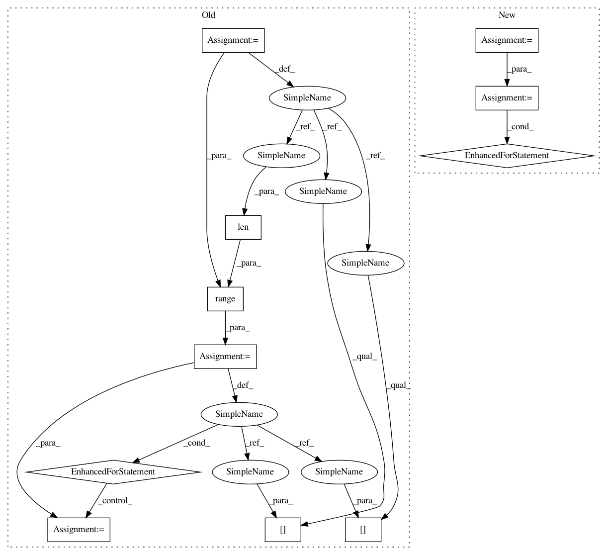

49ca8c83ca65a1060713d0295d1d206b43933e3b,autokeras/generator.py,HillClimbingClassifierGenerator,generate,#HillClimbingClassifierGenerator#,104
Before Change
optimal_index = None
ModelTrainer(self.model, self.x_train, self.y_train, self.x_test, self.y_test, self.verbose).train_model()
_, optimal_accuracy = self.model.evaluate(self.x_test,self.y_test,verbose=self.verbose)
models = self._remove_duplicate(net_transfromer(self.model))
for index in range(0,len(models)):
models[index].compile(loss=categorical_crossentropy,
optimizer=Adadelta(),
metrics=["accuracy"])
ModelTrainer(models[index], self.x_train, self.y_train, self.x_test, self.y_test, self.verbose).train_model()
_, accuracy = models[index].evaluate(self.x_test, self.y_test, self.verbose)
if accuracy > optimal_accuracy:
optimal_accuracy = accuracy
optimal_index = index
self.model = models[index]
return self.model if self.optimal_index is not None else None
After Change
ModelTrainer(self.model, self.x_train, self.y_train, self.x_test, self.y_test, self.verbose).train_model()
_, optimal_accuracy = self.model.evaluate(self.x_test, self.y_test, verbose=self.verbose)
new_models = self._remove_duplicate(net_transformer(self.model))
self.history_models += new_models
accuracy_list = []
for model in new_models:
model.compile(loss=categorical_crossentropy,
optimizer=Adadelta(),
metrics=["accuracy"])
ModelTrainer(model, self.x_train, self.y_train, self.x_test, self.y_test,
self.verbose).train_model()
_, accuracy = model.evaluate(self.x_test, self.y_test, self.verbose)
accuracy_list.append(accuracy)
max_index = np.argmax(np.array(accuracy_list))[0]
max_accuracy = accuracy_list[max_index]
if max_accuracy > optimal_accuracy:
In pattern: SUPERPATTERN
Frequency: 3
Non-data size: 11
Instances
Project Name: jhfjhfj1/autokeras
Commit Name: 49ca8c83ca65a1060713d0295d1d206b43933e3b
Time: 2017-12-18
Author: jhfjhfj1@gmail.com
File Name: autokeras/generator.py
Class Name: HillClimbingClassifierGenerator
Method Name: generate
Project Name: jhfjhfj1/autokeras
Commit Name: 49ca8c83ca65a1060713d0295d1d206b43933e3b
Time: 2017-12-18
Author: jhfjhfj1@gmail.com
File Name: autokeras/generator.py
Class Name: HillClimbingClassifierGenerator
Method Name: generate
Project Name: cesium-ml/cesium
Commit Name: 1cf1a4c00ba6404bb7387c722187a22357b2f193
Time: 2015-02-13
Author: a.crellinquick@gmail.com
File Name: mltsp/custom_feature_tools.py
Class Name:
Method Name: parse_tsdata_from_file